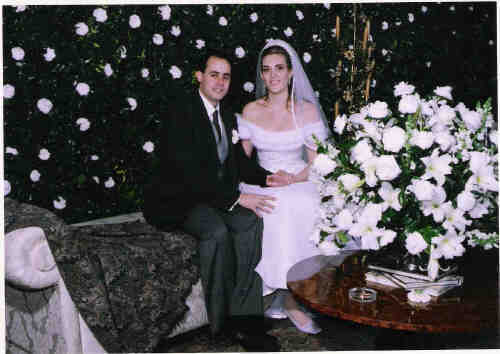

_Rapha_e_eu.jpg "(486 KB)
(Clique na Foto para vê-la no Tamanho Original)")
Raphael Nehin Corrêa (1970-) |
Raphael Nehin Corrêa

(Clique na Foto para vê-la no Tamanho Original)")
• fotos: Patricia - Rhapha - Pedro. .jpg "Patricia - Raphael (503 KB)
(Clique na Foto para vê-la no Tamanho Original)")
• fotos: Patricia - Raphael. .jpg "Raphael - Patricia (531 KB)
(Clique na Foto para vê-la no Tamanho Original)")
• fotos: Raphael - Patricia.  • fotos: Raphael e Patricia. Raphael casad[:o::a] Patricia Natrielli Gerhardt, filha de Werner Gerhardt Júnior e Filomena Natrielli. (Patricia Natrielli Gerhardt nasceu em em 8 Out 1971 em São Paulo, Sp.) |
 Eventos notáveis em Sua vida foram:
Eventos notáveis em Sua vida foram: